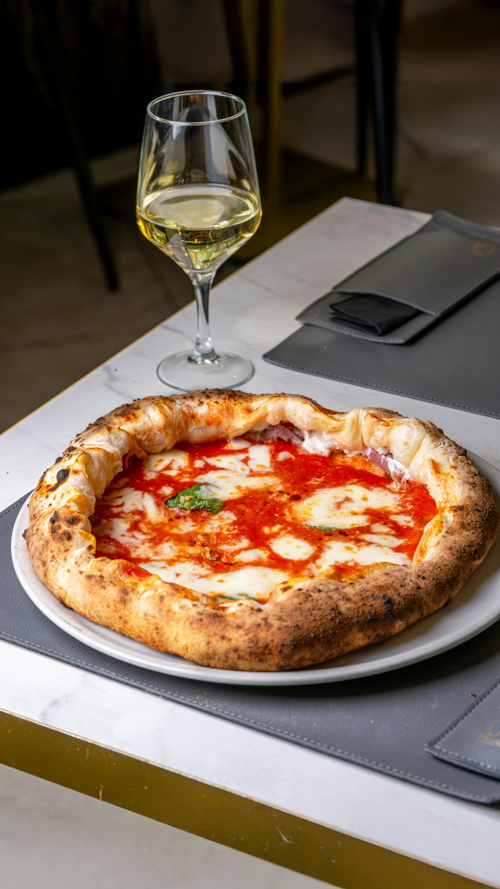
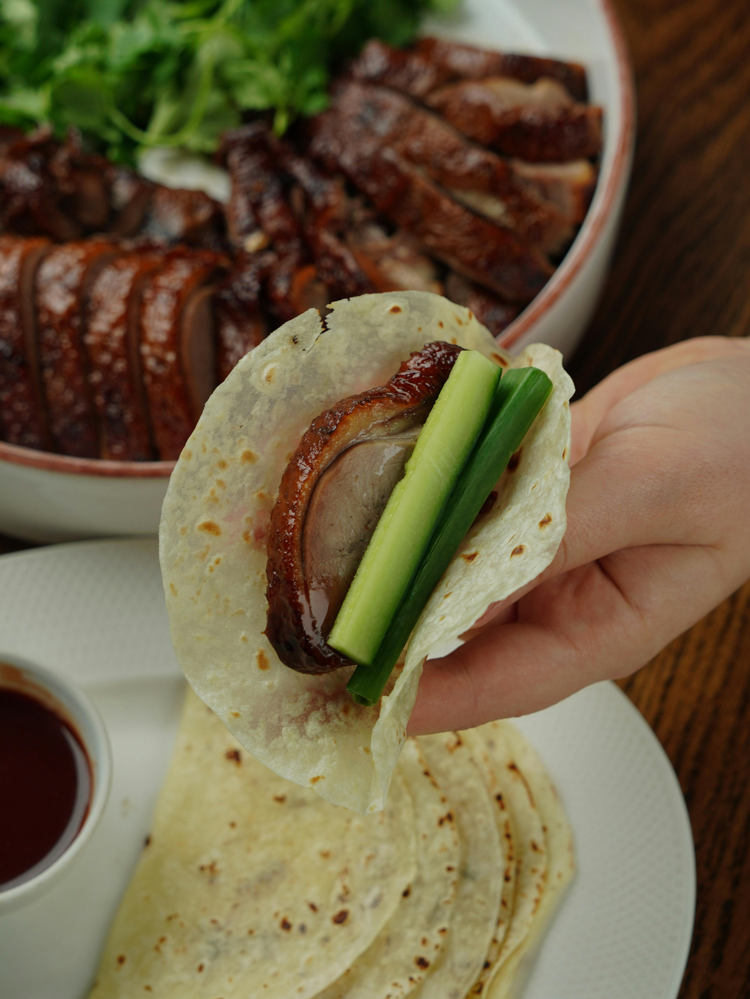
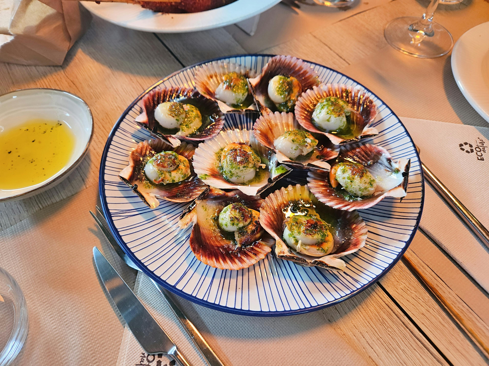
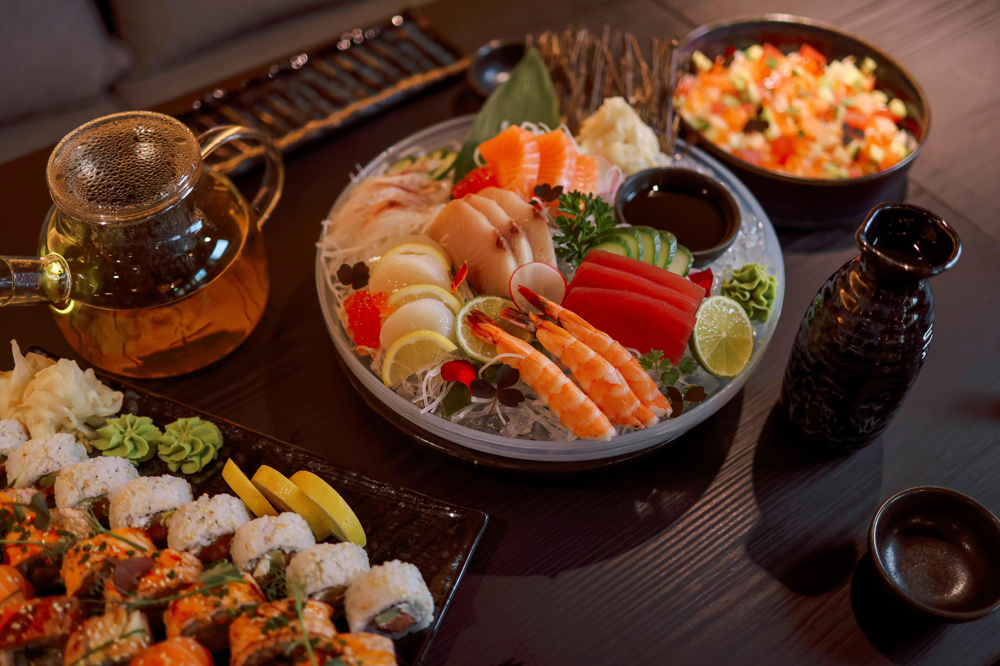
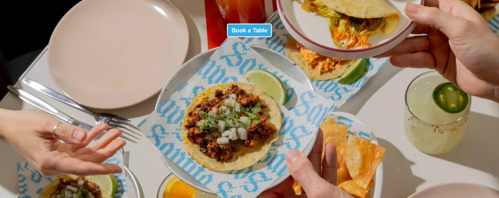

Landro
Cuisine: Italian
Wood-fired pizza, pasta and tiramisu. Inspired by Italy, made for Melbourne.

Signature Dishes
- Pizza: Badabing - $29
- Gnocchi: Gnocchi Pesto Burrata - $32
- Pasta: 100 Layer Lasagna - $32
Price Range
$25-$80 per Head
Reservation Deposit
$20
3 Kingdoms
Cuisine: Chinese
3 Kingdoms is a must-visit for Peking duck enthusiasts. Renowned for its expertly crafted dishes, the restaurant serves a signature three-course duck experience that includes crispy skin, homemade pancakes, and flavorful stir-fried noodles.

Signature Dishes
- Banquet Crispy Peking Duck - $53.90
- Poultry Breaded WestLake Duck Sweet & Sour - $24.90
- Poultry Cantonese Style Duck - $24.90
Price Range
$25-$80 per Head
Reservation Deposit
$30
Ho Siak
Cuisine: Malaysian
Ho Siak is the first-floor elevated dining concept within the Ho Siak Melbourne complex — Chef Siaks creative and experimental kitchen brought to life.

Signature Dishes
- Seafood Shark Bay Scallop, XO Butter - $60
- Seafood Oyster, Nyonya Mignonette & Trout Roe - $80
- Seafood Raw Kingfish, Assam Laksa Granita, Pineapple Salsa - $85
Price Range
$60-$160 per Head
Reservation Deposit
$100
Kuishinbō
Cuisine: Japanese
An intimate and unique multi-course experience. Put yourself in the hands of our Master Chef and be immersed in the skill, technique and creative freedom of our Japanese craftsmanship.

Signature Dishes
- Seafood Moreton Bay Bug Special Maki - $58.5
- Mains Wagyu Ribs - $59.5
- Seafood Hokkaido Lobster - $57.5
Price Range
$60-$160 per Head
Reservation Deposit
$80
Queso y Carne
Cuisine: Mexican
Inspired by the taquerias of Mexico City. Tacos with handmade tortillas from corn nixtamalised in house. For dine in & takeaway.

Signature Dishes
- Roast Lamb Barbacoa - $49
- Tacos Baja Fish (2PC) - $19
- Entrées Guacamole - $16
Price Range
$20-$60 per Head
Reservation Deposit
$20
Tond-oo
Cuisine: Indian
Indian flavours, Melbourne Soul. Tond-oo brings the bold spices of India to Melbourne with a modern Australian touch.

Signature Dishes
- Beef Kerala Beef Fry - $22
- Seafood Mango Barramundi Curry - $30
- Vegetarian Gassi Pumpkin Kofta - $25
Price Range
$20-$60 per Head
Reservation Deposit
$20